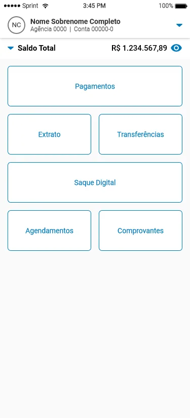
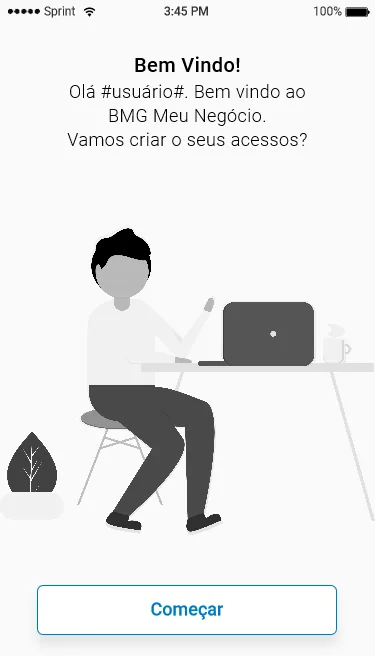
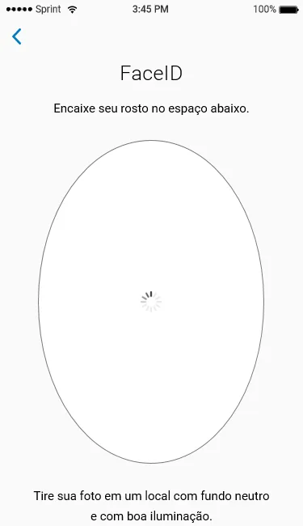
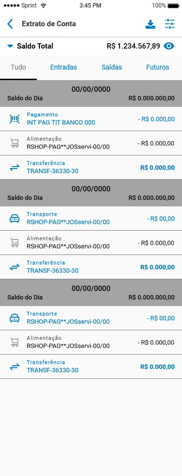
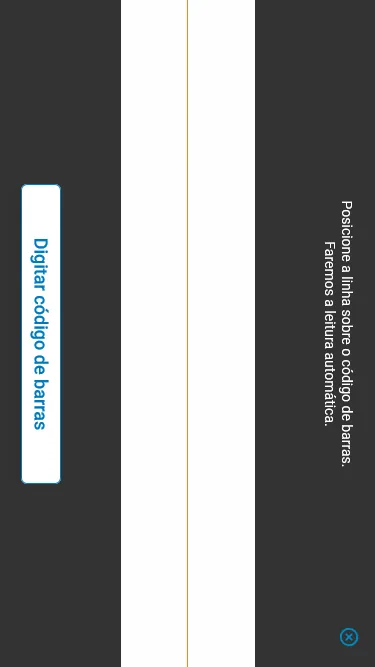
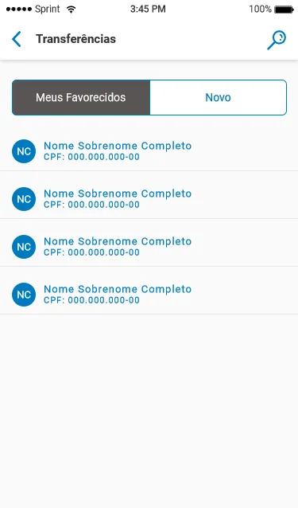
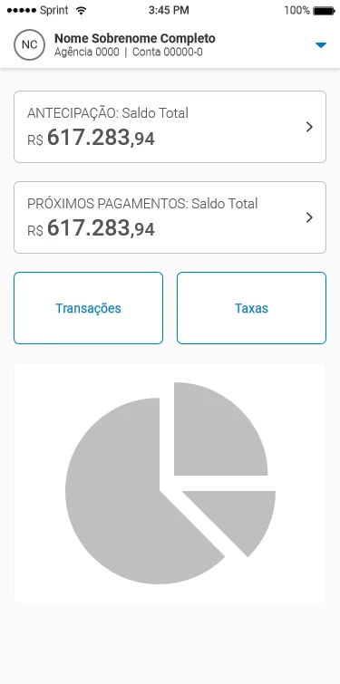

Stakeholders
Conduzir matriz CSD e alinhamento com produto, desenvolvimento e operação.
Arquitetura financeira modular para operações PJ em ambiente regulado, com jornada de abertura, serviços bancários e validações progressivas.
Informações do Projeto
Projeto desenvolvido para estruturar uma conta digital PJ com abertura, serviços bancários e validações progressivas.
Mais do que um projeto de interface, este trabalho envolveu compreender como pequenas empresas lidam com serviços bancários no dia a dia.
O projeto estruturou uma conta digital para perfis de Pessoa Jurídica, de empreendedores individuais a pequenas empresas com operação mais complexa.
Cada segmento opera sob condições financeiras e fiscais específicas. PF Empreendedor, MEI, Simples Nacional e LTDA exigem níveis diferentes de documentação, relatórios e permissões.
O desafio era permitir entrada simples sem ignorar exigências bancárias de segurança, compliance e prevenção à fraude.
A conta precisava crescer junto com a complexidade do negócio.
A falta de canais digitais adaptados fazia com que o pequeno empreendedor travasse na triagem inicial de conformidade.
Sem flexibilidade documental, pequenos negócios passavam pelas mesmas checagens pesadas de uma grande sociedade limitada.
A arquitetura legada aumentava abandono antes da ativação.
Simplificar demais comprometeria segurança; exigir demais destruiria conversão.
Um fluxo simples demais comprometeria checagens antifraude e KYC. Manter exigências rígidas inviabilizaria clientes menores.
A solução precisava combinar velocidade para o cliente com controle exigido pelo banco.
Atuei na definição conceitual da jornada, facilitação com stakeholders e desenho dos fluxos principais da conta digital PJ.
Conduzir matriz CSD e alinhamento com produto, desenvolvimento e operação.
Diferenciar PF Empreendedor, MEI, Simples Nacional e LTDA.
Separar conta base, pagamentos, transferências, extrato e Granito.
Organizar KYC, autenticação e permissões sem travar a entrada.
Desenhar onboarding, conta, extrato, pagamentos e transferências.
Equilibrar simplicidade com requisitos regulatórios e antifraude.
Condições que limitaram a solução e orientaram as decisões de arquitetura.
A decisão estrutural foi desenhar a conta em camadas. Todos começam por uma conta base e ativam serviços conforme maturidade e perfil.
Ciclo operacional estruturado:
A sequência de telas estrutura onboarding, autenticação, conta, extrato, pagamentos, transferências e faturamento integrado.



Visão inicial da conta PJ, boas-vindas e validação facial como etapas conectadas de acesso e segurança.


Serviços bancários organizados em módulos de consulta, filtro e operation recorrente para empresas.


Fluxos transacionais e painel de recebíveis da Granito tratados como parte do mesmo ecossistema financeiro.
A integração direta por API com sistemas contábeis variados exigia parcerias específicas com grandes ERPs.
A análise cadastral automática continuou dependendo de revisão humana em contratos sociais complexos.
A simplificação regulada da conta PJ removeu fricção de abertura sem eliminar segurança bancária.
Alinhados em workshop colaborativo de definição da jornada.
Abertura e ativação organizadas em etapas progressivas.
Segmentos atendidos por uma interface adaptativa.
Fluxos para conformidade, autenticação e prevenção à lavagem de dinheiro.
Em produtos bancários, simplificar não significa remover etapas ou esconder segurança.
Quando o produto respeita o ritmo do usuário, a burocracia é percebida como cuidado, não como obstáculo.